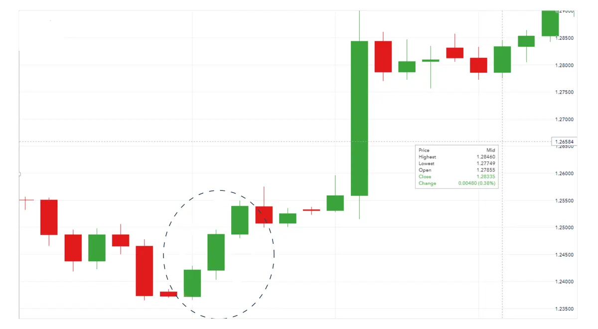
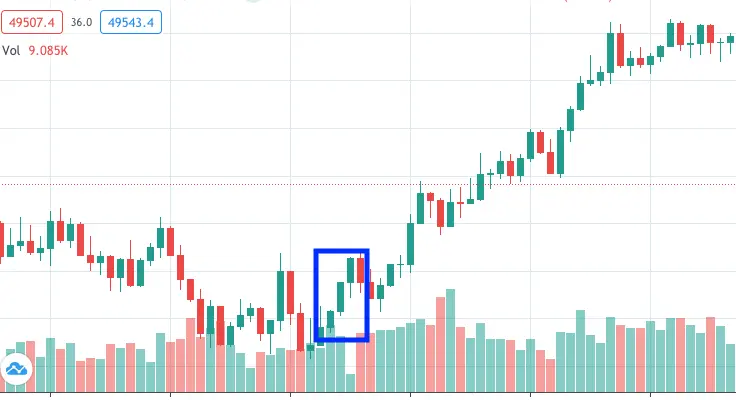

The three-white soldiers pattern is a bullish candlestick formation on a trading chart that occurs at the bottom of a downtrend. As the name suggests, the pattern consists of three candles, which are green in color. Traders believe that this formation signals an upcoming price reversal because of the strong buying pressure.
The reverse of the three white soldiers is called the three black crows. This pattern is represented by three consecutive red candlesticks that occur at the top of an uptrend.
| How to identify the three white soldiers pattern |
To identify the three white soldiers pattern, look for three consecutive green or white candlesticks. Each must open and close progressively higher than the first. The candlesticks should have big bodies and very small (or no) wicks. As mentioned, you are likely to see the pattern at the bottom of a downtrend.
| Three advancing white soldiers example |
Say you’re following the GBP/USD price, which opens the trading day at $1.23723. As buyers and sellers enter the market, the price starts moving. It hits a low of $1.23657 but buyers are putting a lot of pressure on the market and the pair hits a high of $1.24293 before closing at $1.24211.
The next trading day, the bulls continue to push the price up, and it reaches a high of $1.24958 before closing at $1.24873. This trend continues on the third trading day, with buyers managing to get the GBP/USD price up to $1.25494 before it closes at $1.25388. These upward moves over the trading period create the three white soldiers candlestick pattern, as pictured below.

| What do the three white soldiers mean? |
The three white soldiers mean that there is a steady advance of buying pressure following a downtrend. Bullish patterns like these often signal a reversal of price movement. Some traders consider opening a long position to profit from any upward trajectory when they see the three white soldiers pattern.
| Three white soldiers Key Point |
